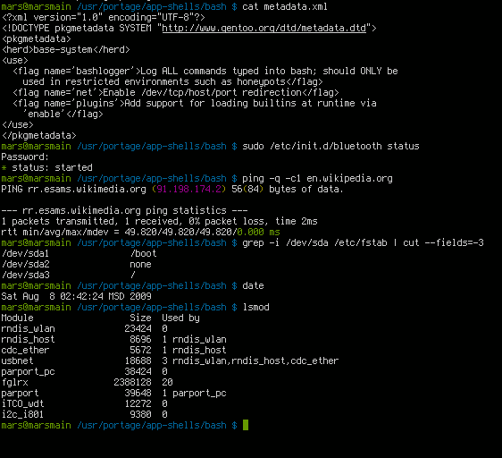

The basics: The computer and the program
1. At the beginning was the Shell :
A computer program that exposes an operating system's services to a human user or other programs. (Wikipedia - Sep. 2023) (also named a terminal)

Some Vocabulary:
- Prompt: A command prompt (or just prompt) state in the command-line interface indicating readiness to accept commands.
- Command: an instruction received via an external interface that directs the behavior of a computer program. In other terms, a call to a program with potentially specific attributes.
2. First BASH Commands.
Bash is the most popular Unix/Linux shell, available by default on most Linux distributions. It is also natively supported on Apple, and versions of Bash can be installed with tools like MinGW on Windows
However, most of the commands presented here exist in other Shell or have some equivalents.
2.a. The File System
First of all, some commands allow a user to navigate in file systems et interact with it.
- ls - list directory elements
- cd - change directory
- cat - read all a text file
- more - read a text file step by step
- touch - touch a resource (create it)
- nano - edit a text file
- rm - remove a file (permanently)
- mkdir - create (make) a directory
- rmdir - remove a directory
- mv - move a resource
- cp - copy-paste a file
- clear - clear your promt
Most of this commands manipulate paths - a description of where to find a resource on the computer -.
- / - the root directory in Linux system - example:
du /bin/bash(du - estimate file space usage) - . - the current directory - example:
mkdir ./workspace - .. - the parent directory - example:
cd ../../media - ~ - the user directory (home) - example:
cd ~/Documents - CApitAl Letters maTer - example:
cd ~/Documents\(\neq\)cd ~/documents
2.b. Mastering Commands
Most of the commands accept arguments and options. With a simplistic vision, the argument gives a target to the command execution, while options permit the user to change the context execution of the command.
Classical syntax: command --option -o argument - example: ls -a ~
Some commands permit manipulating the command collection.
- man - command and library manual - example:
man cp - apropos - search in the manuals - example:
apropos search - whereis - find the location of a resource - example:
whereis python3 - alias - create our own command - example:
alias listall="ls -a"
2.c. Some triks :
- tabulation: auto-complete the command line or list the possibilities.
- !xx: run again the last command starting with
xx. - ctrl-r: search for a command in command history.
- Q: quit a running program (in most programs).
- ctr-c: terminate a running program.
- ~/.bashrc: file: user configuration routine.
3. Users session
On Linux, users are clearly identified everywhere. All resources have owners, and users can be limited in their capacities on the system. Users can be artificially set, they are not necessarily real human beings.
3.a. session
A session is an active connection to a system or program.
- who - list the open session in a computer
- su : start a new session as a specific user - example:
su bob - ssh - open a session in a distant computer following the ssh protocol
A user session is associated with an environment. I.e. a computer system or set of systems in which a computer program or software component is deployed and executed (Wikipedia Sept. 2023).
- env - list the environment variable.
- $ - access a variable - example:
echo $PATH - $PATH - list of all directories where bash search the commands.
- $SHELL - the current shell interpreter.
- $USER - the user name.
- export - create a new variable - example:
export MYBIN=~/bin - ~/.bashrc (file): user configuration commands.
3.b. User, Group and Rules
Users are structured with groups.
Users as groups have a name and a number
A user is defined with a primary group, its main group, but a group can include several users.
The files /etc/passwd and /etc/group record that information, among others.
List them with cat for example (cat /etc/passwd and cat /etc/group).
Specific access is associated to each resource on the computer with r: read \(\quad\) w: write \(\quad\) x: executed/open.
The triple authorization can be different for the user owner, the group owner, or all the others.
List command with the -l option gives ownership and authorization information, among others.
For example, with ls -l /etc

Manipulate the owner and authorizations:
- chmod : change authorizations - Examples:
chmod +x aFile- add x authorization on aFilechmod 752 aFile- set authorization on aFile on a binary style - chown : change the owner
- sudo : excute a command as a root user (administrator) if granted - example
sudo gedit /etc/passwd.
4. The Processes
Finally, the Operating System (OS) is mainly a process manager... An OS offers an environment to create and execute programs. Typically, the language C is first developed in parallel to Unix to provide a powerful language to the OS, and to use it for the OS core processes.
Today, systems have evolved significantly and allow complex architecture with several processes running in parallel and potentially in virtual machines. Similarly to ls, ps list the local processes (ie. the children processes of the bash shell). For instance:
gedit aFile.txt &
ps
Here, & permits to get the prompt back after starting gedit.
As for other commands, ps accepts options, for instance, adding -e lists all the processes on the machine.
For managing processes, OS attaches some elements to each one: the PID (Process IDentifier), a parent process, an owner, a name, ...
Other command :
- top - interactive process monitoring ( Q to quit ) (quite similar to ps, but interactive and constantly updated)
- kill - sent a signal to a process - Examples:
kill 19482- send TERM signal to process 19482 ;kill -s KILL 19482- send KILL signal to process 19482
Codes, Programs and Scripts
- Codes: Sequence of written instruction text format according to a given programming language.
- Programs: Executable binary on a OS
- Specific to the OS (and potentially to the hardware)
- Generally compiled codes (example with C language compiled with gcc).
- Scripts: Interpretable pieces of code by a program. Typically, Python is a scripting language. file: hello.py
5. Python Programming Languages
Python is a high level programming language. Its allows for abstracted data structures, includes core tools like dynamic type, garbage colector, Object-Oriented Programming (OOP) and a lot more with a large collection of libraries.
The language is interpreted, and python3 designs the programming language but also the interpreter process (cpython), allowing reading and executing Python instructions.
- Code source on github.com - 63.5% Python / 34.6% C
Minimale python script:
print('hello world')
Then in a shell: python3 hello.py
Python in short:
- Rich language capabilities (it is possible to do complex things)
- Concise language (complex things require few codes)
- Very rich community libraries (most of the complex things are already implemented)
- Interpretable (the code is mostly OS independent)
- Use a virtual machine (including Garbage Collector)
- Not natively efficient (but compatible with C and C++ libs)
4.a Sequential Instructions
Python is structured with sequential instructions:
# Some comments...
a= 1 # - Asignment of a new integer variable
b= a + 48.4 # - Asignment of a new floating point variable
# as the result of the instruction: a + 48.4
aString= "Hello" # - Assignment of a new string variable (list of characters)
print( aString ) # - Call to the function print with aString as one parameter
result= aString.search('e') # - Call to the method search on the aString instance
# with a parameter 'e'
It allows for function definition.
def myWonderfullFunction( aFirstIntergerPaprameter, aSecondIntergerParameters ):
intergerSum= aFirstIntergerPaprameter + aSecondIntergerParameters
return intergerSum
a= 2
b= myWonderfullFunction( a, 40 )
print( "Result: " + str(b) )
To notice:
- Block separation is delimited with space or tabulation indentation.
- Functions need to be defined prior to be used.
4.b loop control
Loops allow for repeating an instruction sequence until a specific state is reached (while) or by visiting a collection of objects (for). The while instruction (WHILE condition DO something) is the simplest available loop control:
b= 0
while b <= 40 :
b+= 2
print( "Result: " + str(b) )
The for instruction allows for visiting each element of an iterable collection, for instance, a list.
aList= [2, 10, 18, 4, 8]
b= 0
for value in aList :
b+= value
print( "Result: " + str(b) )
4.c Going further...
It is not the purpose here, to provide an entire course on Python. There are huge resources on the internet, both more complete and well organized, starting with the official Python documentation https://docs.python.org/3/. We highly recommend searching the web to increase your knowledge.
In this jungle, the w3schools certainly offers the best learning experience. You can start, for instance, with Python lists and Python dictionaries, the two most used data structures in Python.
Finally, complementary modules / packages can be associated to the code with the import instruction.
Typically sys package provides some interfaces with the system.
import sys
print( "System platform: "+ str(sys.platform) )